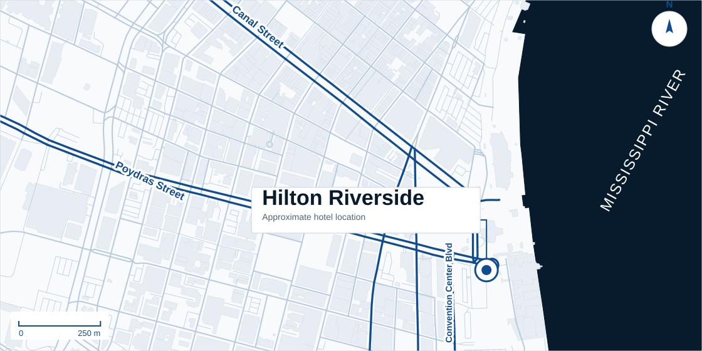
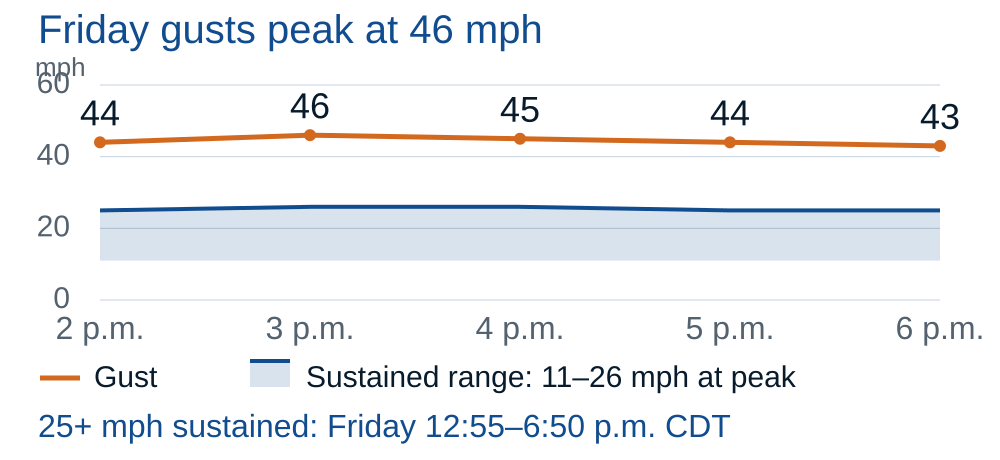

Current eastward track
Strongest effects remain farther east; local rain and gusts still occur.
Response: Maintain readiness and monitor each advisory.
Oct 7, 6:15 a.m. CDT / 7:15 a.m. EDTTropical Storm Isaias
Prepare for Friday. The main threat has shifted east.
Finish readiness checks Thursday. StormGeo’s New Orleans 25+ mph sustained-wind window begins Friday at 12:55 p.m. CDT.
NWS shows Friday gusts to 40 mph and possible tropical-storm conditions Friday night; StormGeo’s named point peaks at 46 mph gusts.
Confirm critical services, guest communications and staffing now. A westward track change would increase local concern.
Oct 9 · afternoon into night
NWS vicinity / StormGeo named point
Cyclone passage; accumulation period unspecified
Sustained ≥74 mph: StormGeo 9%; NHC city 1%. Different points/windows; neither measures hotel damage.
Verify decision owners, critical systems and guest needs.
Recommended target: finish checks, staffing and response coordination.
Monitor wind and rain; retain NWS Friday-night contingency.
Verify systems and access against actual conditions and official direction.


| Question | NOAA / NHC / NWS | StormGeo | Operational meaning |
|---|---|---|---|
| Friday gusts | NWS vicinity: 40 mph | StormGeo point: 46 mph | Both support securing outdoor items and checking power continuity. |
| Sustained wind ≥39 mph | NHC city: 11% / five days | StormGeo: 28% / passage | Different points and windows. Retain a higher-wind contingency. |
| Rainfall exposure | WPC: Marginal coastal LA risk | StormGeo: 2–5 in rainfall | Street ponding may disrupt access without hotel inundation. |
Strongest effects remain farther east; local rain and gusts still occur.
Response: Maintain readiness and monitor each advisory.
Closer core or heavier bands raise local wind, water-entry and access concerns.
Response: Reassess guest services and critical-system contingency thresholds.
Power loss, rain intrusion and street-access disruption occur together.
Response: Use verified backup capability and client plans; no duration or flood depth is forecast.
Verify tested critical systems, fuel, cooling, water and drainage.
Confirm staffing, guest messaging, mobility needs and decision authority.
Verify guest, delivery and transport access against current street conditions.
Review SOPs, escalation contacts and response priorities before Friday.
NorthStar can support readiness and recovery. Pre-loss planning · Water mitigation · Structural drying · Facility support
Call 800.283.2933Oct 7: full/site 4 and StormWatch 3 a.m. CDT; 4a 4 a.m. No refreshed site tables.
Advisory 3: Oct 7, 4 a.m. CDT. No coastal watches/warnings then.
Oct 7: vicinity grid 5:21 a.m. CDT; discussion 4:22 a.m. Not rooftop wind.
Issued Oct 7, 5:03 a.m. EDT; valid Fri 7 a.m.–Sat 7 a.m. CDT.
Oct 7 runs: supporting model guidance; no blended forecast or calibrated scenario odds.
Prepared for operational planning. Follow current official alerts and local instructions.
Back to TL;DR